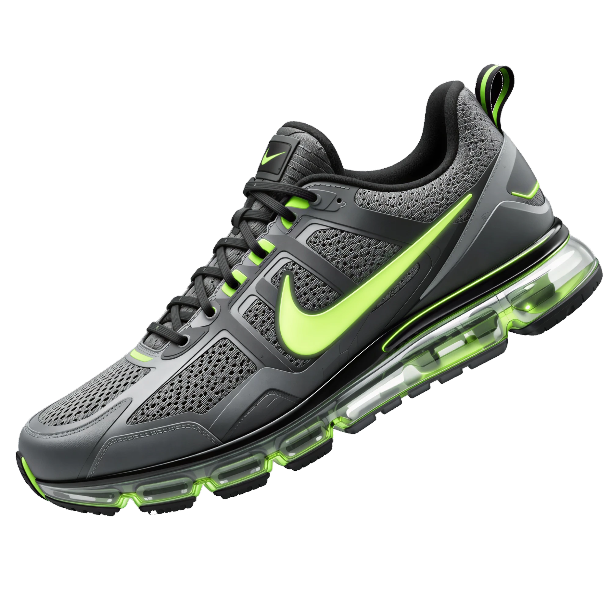

CONCEPT CAMPAIGN · 2026
움직임이 곧 증명이다.
한계를 선이 아니라 다음 목표로 바꾸는 사람들을 위해.
MANIFESTO
위대함은 타고나지 않는다.
매일, 한 걸음씩 만들어진다.

PRODUCT
착지 순간의 충격을 흡수하고, 다음 스텝으로 에너지를 되돌려줍니다.
발의 움직임에 맞춰 늘어나는 일체형 니트 구조로 군더더기를 뺐습니다.
지면을 박차는 힘을 그대로 다음 걸음의 추진력으로 전환합니다.
러닝부터 일상까지, 하루 종일 신어도 편한 밸런스를 맞췄습니다.
BY THE NUMBERS
LOOKBOOK
DROP SOON
출시 알림을 받고 드롭 당일 가장 먼저 만나보세요.
신청 완료 — 드롭 소식을 가장 먼저 보내드릴게요.